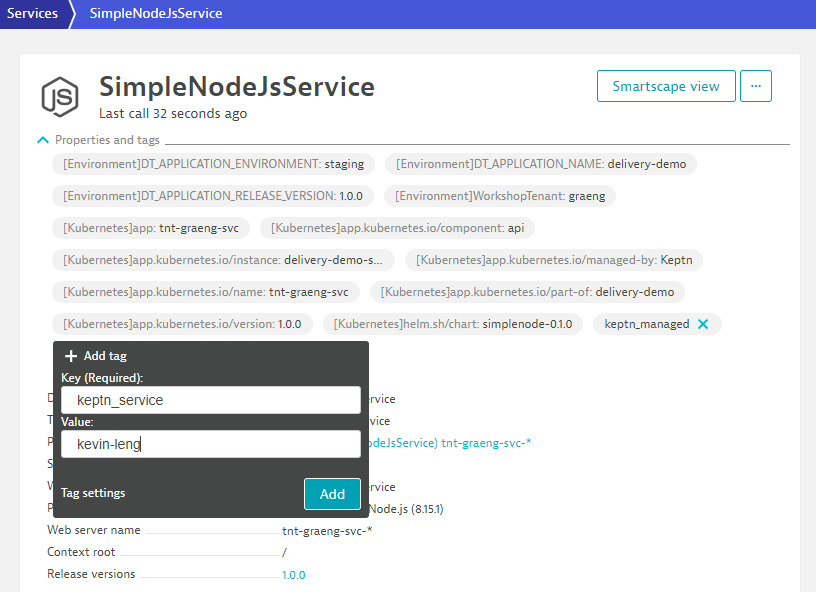

This repository contains the hands on for the Day 2 Operations - Cloud Native Observability Workshop.
Prerequisites
- Dynatrace SaaS/Managed Account. Get your free SaaS trial here.
- AWS account, with the ability to create an EC2 instance from a public AMI. Signup to a free trial here.
- Chrome Browser
- SSH client such as mobaxterm.
Lab Setup
The following steps are used for this lab:
- Sample Application
- Sample App is based on Sockshop
What You'll Learn
- Deploy OneAgent to a Kubernetes / Microservice Environment
- GitOps / Monitoring as code approach to push application config
- Learn Metric Ingestion for automated baselines across all entities
- Site Reliability Engineering - Service Level Objectives
- Site Reliability Engineering - Releases
Login to the bastion host using the username / password provided
Install Keptn CLI
Download and install the Keptn CLI:
curl -sL https://get.keptn.sh | bash
Authenticate with Keptn Cloud Automation
Copy the keptn auth command from the Cloud Automation UI (top right of screen)

[xxx@ip-172-31-28-139 ~]$ keptn auth --endpoint=https://mvl77343.cloudautomation.live.dynatrace.com/api --api-token=<token>
Warning: could not parse KUBECONFIG file: Cannot find file /home/harhiy/.kube/config
Hint: If you don't have a 'kubeconfig' file, you can disable this check via 'keptn set config KubeContextCheck false'
* Warning: Your Keptn CLI version (0.8.7) and Keptn cluster version (0.8.6) don't match. This can lead to problems. Please make sure to use the same versions.
Starting to authenticate
Successfully authenticated against the Keptn cluster https://mvl77343.cloudautomation.live.dynatrace.com/api
Using a file-based storage for the key because the password-store seems to be not set up.
Test it is working by calling keptn get projects
[xx@ip-172-31-28-139 ~]$ keptn get projects
Warning: could not parse KUBECONFIG file: Cannot find file /home/harhiy/.kube/config
Hint: If you don't have a 'kubeconfig' file, you can disable this check via 'keptn set config KubeContextCheck false'
* Warning: Your Keptn CLI version (0.8.7) and Keptn cluster version (0.8.6) don't match. This can lead to problems. Please make sure to use the same versions.
NAME CREATION DATE SHIPYARD VERSION
delivery-demo 2021-08-05T07:31:03Z spec.keptn.sh/0.2.0
dynatrace 2021-08-05T06:09:24Z spec.keptn.sh/0.2.0
In this exercise, we'll create a service for a basic quality gate.
Add Tags
Pick your tnt-xxxx-svc service in production
- Tag 1: keptn_managed. Either add via „Add tag" or via Dynatrace Tagging API

- Tag 2: keptn_service:YOUR_SERVICE_NAME: This is best done via a Tagging Rule or also via „Add tag". In this example use your firstname-lastname

Wait 1 min for your service to appear in the Dynatrace project
- Automatic Synchronization happens every minute
- Every service with the tags keptn_managed and keptn_service: will show as a service

Trigger evaluation via command line
keptn trigger evaluation --project=dynatrace --stage=quality-gate --service=YOUR_SERVICE_NAME --timeframe=30m --labels=buildId=1,executedBy=manual
Example:
[ec2-user@ip-172-31-18-234 keptn-on-k3s]$ keptn trigger evaluation --project=dynatrace --stage=quality-gate --service=kevin-leng --timeframe=30m --labels=buildId=1,executedBy=manual
Warning: could not parse KUBECONFIG file: Cannot find file /home/ec2-user/.kube/config
Hint: If you don't have a 'kubeconfig' file, you can disable this check via 'keptn set config KubeContextCheck false'
* Warning: Your Keptn CLI version (0.8.7) and Keptn cluster version (0.8.6) don't match. This can lead to problems. Please make sure to use the same versions.
Starting to trigger evaluation of the service kevin-leng in project dynatrace
ID of Keptn context: 2e7e14d1-f8b5-436c-9638-c51a77dd41ff

Trigger evaluation again but this time use buildId=2
keptn trigger evaluation --project=dynatrace --stage=quality-gate --service=YOUR_SERVICE_NAME --timeframe=30m --labels=buildId=2,executedBy=manual
Trigger evaluation via API
- Access the Keptn Swagger API's (top right-hand corner > Keptn API)
- Change API definition to controlPlane
- Authorize the API's using the keptn API token (top right-hand corner > Keptn API token)
- Select API: Evaluation > Post /project​/{project}​/stage​/{stage}​/service​/{service}​/evaluation
Set:
- project: dynatrace
- stage: quality-gate
- service: YOUR_SERVICE_NAME
- evaluation=
json
{
"labels": {
"executedBy": "api",
"buildId": "3"
},
"timeframe": "30m"
}
Then click Execute ### Automation Events also available in Dynatrace Events sent to the Dynatrace monitored service based on the two tags View the events against your service in Dynatrace. ## Gitops - Codify Quality Gates Duration: 15 ### First explore upstream git repo ### Modify SLO Find your service (tenant) under the quality-gates branch and modify the default SLO.yaml Git User: keptn Git Password: keptn#R0cks Modify the SLO are per the following image:
### Automation Events also available in Dynatrace Events sent to the Dynatrace monitored service based on the two tags View the events against your service in Dynatrace. ## Gitops - Codify Quality Gates Duration: 15 ### First explore upstream git repo ### Modify SLO Find your service (tenant) under the quality-gates branch and modify the default SLO.yaml Git User: keptn Git Password: keptn#R0cks Modify the SLO are per the following image:  If you need the full completed yaml:
If you need the full completed yaml: yaml
---
spec_version: "1.0"
comparison:
aggregate_function: "avg"
compare_with: "single_result"
include_result_with_score: "pass"
number_of_comparison_results: 1
filter:
objectives:
- sli: "response_time_p95"
key_sli: false
pass:
- criteria:
- "<500"
warning:
- criteria:
- "<=1000"
weight: 1
- sli: "error_rate"
key_sli: true
pass:
- criteria:
- "<5"
- sli: throughput
pass:
- criteria:
- ">10"
- sli: "response_time_p50"
- sli: "response_time_p90"
total_score:
pass: "90%"
warning: "50%"
Modify SLI
Find your service (tenant) under the quality-gates branch and view the default SLI.yaml No changes are required for this exercise.
Trigger evaluation
Use the API or command line to trigger an evaluation - use buildId 4
e.g.
keptn trigger evaluation --project=dynatrace --stage=quality-gate --service=tnt-xxxx-svc --timeframe=30m --labels=buildId=4,executedBy=manual
View the resulting evaluation in the Cloud Automation UI:

Let‘s create a new "dbqg-xxx" (short for dashboard quality gate for xxxx) service in our dynatrace project with the CLI
where xxx is your "tenant"
keptn create service dbqg-xxxx --project=dynatrace
CLONE the existing dashboard KQG;project=dynatrace;service=dbqg-xxxx;stage=quality-gate
Change the name format to reflect your service name
keptn trigger evaluation --project=dynatrace --stage=quality-gate --service=dbqg-xxx --timeframe=30m
Add a new chart tile to the dashboard:
Metric: builtin:service.cpu.perRequest Chart Title: Service CPU;sli=service_cpu;pass=<20;warning=<50;key=false
Then trigger an evaluation again...
keptn trigger evaluation --project=dynatrace --stage=quality-gate --service=dbqg-xxx --timeframe=30m
You should see a new metric (service_cpu) being evaluated in the SLO
Add a new Top List tile to your dashboard
Metric: builtin:service.response.server Split by: Service Chart Title: Service Response;sli=service_rt;pass=<200;warning=<500;key=false
Then trigger an evaluation again...
keptn trigger evaluation --project=dynatrace --stage=quality-gate --service=dbqg-xxx --timeframe=30m
You should see a new metrics (servicert) being evaluated in the SLO
We hope you enjoyed this lab and found it useful. We would love your feedback!